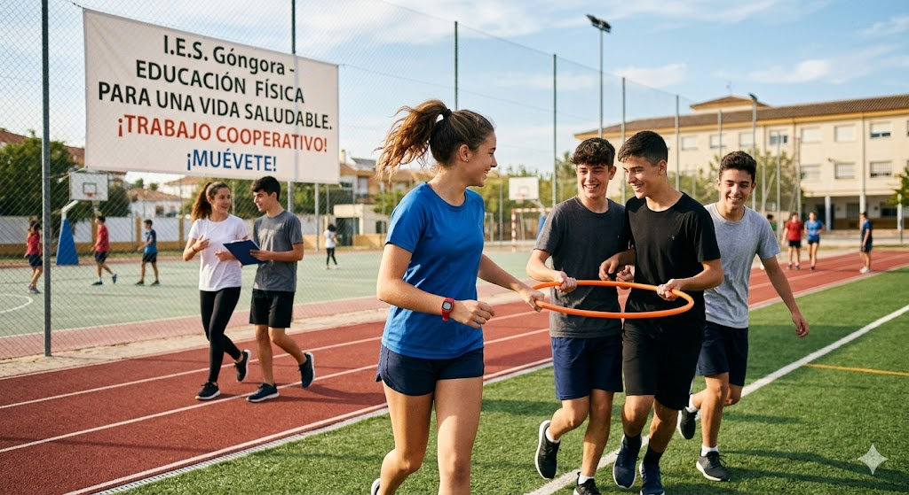

PRODUCTO FINAL
🔹 Nuestra misión
Durante este proyecto nos convertiremos en investigadores de nuestro propio cuerpo.
A través de diferentes actividades físicas analizaremos cómo cambia nuestra frecuencia cardiaca y cómo influyen nuestros hábitos diarios en nuestra salud y bienestar.
🔹 ¿Qué tendremos que hacer?
Cada grupo deberá elaborar una infografía digital utilizando Canva.
En ella se incluirán:
- Datos sobre la frecuencia cardiaca
- Actividades físicas realizadas
- Análisis de resultados
- Reflexión sobre hábitos saludables
- Consejos para mejorar la salud y el bienesta
🔹 Objetivo final
El objetivo es comprender la relación entre actividad física, salud y bienestar, utilizando herramientas digitales para comunicar la información de forma visual y creativa.
